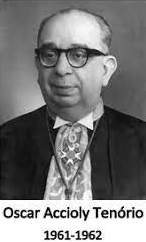

Escola Técnica Estadual Oscar Tenório
A Escola Técnica Estadual Oscar Tenório (ETEOT) foi fundada em 25 de fevereiro de 1980 com o nome de Centro Interescolar Oscar Tenório (CIOT), vinculado à Secretaria de Estado de Educação e localizada no bairro de Marechal Hermes. No local escolhido para a escola já havia uma outra instituição educacional de ensino técnico, a Escola Técnica Estadual Visconde de Mauá. Inaugurada em 1916 como escola profissional da Vila Proletária de Marechal Hermes, passou por várias mudanças ao longo do tempo, evoluindo desde a Escola Profissional Visconde de Mauá até ter seu nome modificado para Escola Técnica Estadual Visconde de Mauá, em 1997.
Quem foi Oscar Tenório
Nascido em Alagoas, formou-se em Direito. Foi promotor público, juiz, desembargador, professor, presidente da Associação dos Magistrados Brasileiros e da União Internacional dos Magistrados, sediada em Túnis, na Tunísia, tendo sido o primeiro jurista de fora da Europa a ocupar esse cargo. De 1967 a 1971 foi vice-reitor da então Universidade do Estado da Guanabara, para a qual foi indicado reitor em 1972.
Cursosw
- Técnico em Administração
- Técnico em Gerência em Saúde
- Técnico em Informática para Internet
- Técnico em Análises Clínicas